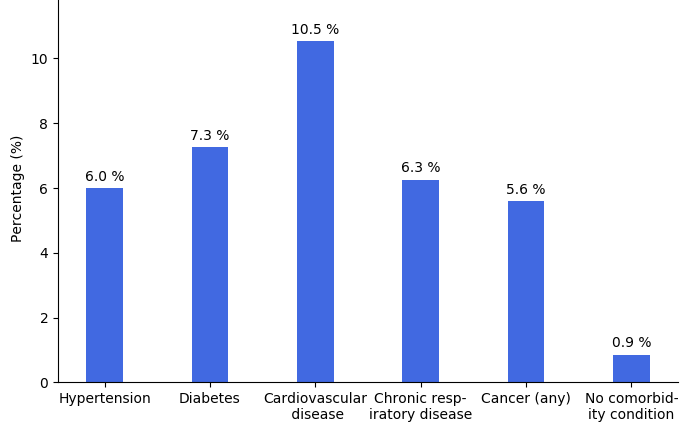

LAST UPDATED: March 26th, 2020 at approximately 7:15pm CST
NOTE: I will continue to add new information so check back often, DO NOT assume the information on this page is the most recent or accurate information. It's only what I as an individual have been able to research.
Hey everyone,
I'm writing because I feel that the response to COVID-19 (Coronavirus) by citizens, businesses and the government in the US has been irresponsible at best. In my opinion there is much misinformation given from a variety of sources. Most importantly, do your own research, don't listen to a single news source and don't just listen to me. I've included full references at the bottom of the page to anything I've stated as fact so that it can be verified and decided if you personally trust it. Just match up the number in parentheses next to the statement, with the number next to the reference link at the bottom of each section.
IMPORTANT: Social distancing and taking preventitive measures is VERY IMPORTANT, even if you're young, healthy and will recover, if the disease is spread too quickly, hospitals can and will be overcrowded meaning PEOPLE WILL DIE.
What I would consider the two most important and trustworthy places are the World Health Organization (1) and the Centers for Disease Control (2) websites. Two good secondary sources are Wikipedia (3) and Reddit (5). Wikipedia gives full source links for any information it claims as true so you can verify its claims. Some people seem to think Wikipedia is not trustworthy, but I feel nowadays it is one of the most reputable sources out there. Changes to each page are monitored extensively, and as I stated before sources are given for all claims, so you can verify anything that is said, or else it is stated to not have a source, at which point you probably should ignore the claim. Reddit usually gets new information first, but because it relies on user submitted content it's necessary to be careful what you trust.
ONLINE NEWS ARTICLE BROWSING TIP
If you try to access a news article on a website that asks you to pay or create an account in order to access the article, you can sometimes bypass this by placing a period after the ".com" and before the "/" for example, change
"https://www.nytimes.com/2020/03/19/us/politics/trump-coronavirus-outbreak.html" to "https://www.nytimes.
com./2020
/03/19/us/politics/trump-coronavirus-outbreak.html"
This doesn't always work.
The reliability and factuality of news sources is important. I've personally found the "media bias chart" by Ad Fontes Media to be the most reliable measure of news sources. (4) If you disagree, do your own research and find a ranking system that you feel you can trust. Just please don't trust a single news source, always find multiple sources and remember just because a news source is reliable doesn't mean an individual article is reliable, as well as vice versa.
Dr. Li Wenliang was a Chinese opthalmologist who was one of the first people to bring attention to the possibility of an outbreak. He was admonished by the Chinese police and told to stop making false statements. On January 8th he contracted COVID-19 while seeing a patient at his hospital. Li died on February 7th. He left behind his son and pregnant wife. A happier side to this tragedy is that Li's parents were also infected, but made full recoveries. Thank you for your sacrifice Dr. Li Wenliang, you will be remembered. (1)
The name of the virus is SARS-CoV-2 (15), from a family of viruses called Coronaviruses. This particular virus causes the disease labelled COVID-19. (16)
On March 7th, 2020 a situation summary from the United States CDC stated, " Public health and healthcare systems may become overloaded, with elevated rates of hospitalizations and deaths." (17)
It is currently unknown if past infection provides immunity, there are reported cases of people recovering and then testing positive again. It is unclear if these cases are a result of reinfection, relapse, or a testing error. Further information is being gathered. (4)(5)(6)
There is thought to be a large amount of unreported cases, because some people experience mild or no symptoms. What this means is the virus is spreading silently and there are most likely many more cases than we know about. (12)(13)
On March 13th, 2020 the World Health Organization declared Europe the new epicentre of the COVID-19 epidemic after the rate of cases in Europe surpassed those in other regions of the world. (11)
for the whole world there are 525,605+ confirmed cases, 123,329+ recoveries, and 23,711+ deaths (7)(8) (updated March 26th, 2020 at 4:13pm CST)
for the United States there are 81,996+ confirmed cases, 1,864+ recoveries and 1,177+ deaths (14) (updated March 26th, 2020 at 4:14pm CST)
On March 26th, 2020 the United States surpassed China and now has the most COVID-19 cases of any country in the world. (18)
the World Health Organization recognized COVID-19 as a global pandemic on March 11th, 2020 (1)
time from exposure to onset of symptoms is generally between 2 and 14 days with an average of 5 to 6 days (3)
the basic reproduction number (R-naught) has been estimated at anywhere from 2.13 to 4.82, meaning each infection is expected to result in 2.13 and 4.82 new infections if no members of the community are immune and no preventitive measures are taken. The r-naught will change as more statistics are gathered (2)(9)(10)
Other symptoms are Haemoptysis at 0.9% and Conjunctival congestion at 0.8%. As the image notes, runny noses are unlikely (BUT NOT IMPOSSIBLE) with COVID-19, if you have a runny nose it's much more likely to be the flu, allergies or another illness. (1)
The time from exposure to onset of symptoms is generally between 2 and 14 days with an average of 5 days. (2)
The time from onset of symptoms to recovery for mild cases is approximately 2 weeks and is 3 to 6 weeks for those with severe/critical cases. (3)
There is thought to be a large amount of unreported cases, because some people experience mild or no symptoms. What this means is the virus is spreading silently and there are most likely many more cases than we know about.(4)(5)
Transmission of the virus from one person to another primarily occurs via respiratory droplets from coughs and sneezes within a range of about 6 feet. (1) Touching surfaces that have been touched someone who is contaminated is another possible source of infection. (2)
Recommended measures to prevent the disease from the WHO and CDC: (3)(4)
frequent hand washing with soap and hot water
maintaining distance from other people
avoid touching eyes, nose or mouth
stay home
avoid travel and public activities
if soap and water are not available use alcohol-based hand sanitizer
immediately dispose of used tissues in receptacles with lids
do not shake hands
Recommendations based on what I've seen from other countries, states and communities:
work from home if possible
avoid gatherings of more than 5 people (avoiding gatherings completely is best)
don't have friends or others into your home
order groceries through delivery services
if you must go to the grocery store, go by yourself
some cities are only allowing one person per household to go out every 2 days for necessities (5)
As of February 26th no deaths have occured in anyone younger than 10. (2) As for other age ranges, to put them into a more clear statistic of APPROXIMATELY (these statistics are varying between countries dependent on how long their outbreaks have had to spread, I'm seeing roughly 2% differences between statistics) how many people who contract the disease will die: (1)
1 in 500 between the ages of 10-19
1 in 500 between the ages of 20-29
1 in 500 between the ages of 30-39
1 in 250 between the ages of 40-49
3.25 in 250 between the ages of 50-59
9 in 250 between the ages of 60-69
2 in 25 between the ages of 70-79
3.7 in 25 above age 80

This graph measures the case fatality rate relating to other health issues regardless of age.
These two graphs need to be read separately, they cannot be combined or looked at together.
It's important to note that while it is true that people with other health issues are more likely to develop into a severe case of COVID-19, (1) people with no health issues can also develop severe symptoms. It is NOT just the elderly or the sick that can die from this disease.
The official Illinois government website for COVID-19 has up-to-date executive orders detailing what the state is doing. (1)
Beginning March 21st, 2020 and currently lasting until April 7th, 2020 (though I personally think it will be extended) a "stay-at-home" executive order has been put into affect. These are some of the things the executive order details: (2)
Stay at home or place of residence
non-essential business and operations must cease, essential business examples are:
stores that sell groceries and medicine
food, beverage, and cannabis production and agriculture
organizations that provide charitable and social services
media
gas stations and businesses needed for transportation
financial institutions
hardware and supply stores
critical trades
mail, post, shipping, logistics, delivery, and pick-up services
educational institutions (not for students, only for purposes of facilitating distance learning, performing critical research, or performing essential functions)
laundry services
restaurants for consumption off-premises
supplies to work from home
supplies for essential businesses and operations
transportation
home-based care and services
residential facilities and shelters
day care centers for employees exempted by this executive order
manufacture, distribution, and supply chain for critical products and industries
critical labor union functions
hotels and motels
funeral services
prohibited activites:
all public and private gatherings of any number of people occurring outside a single household or living unit are prohibited
any gathering of more than ten people is prohibited
individuals may leave their residence only to perform any of the following essential activities:
for health and safety
seeking emergency services
obtaining medical supplies or medication
visiting a health care professional
for necessary supplies and services
groceries and food
household consumer products
supplies needed to work from home
products necessary to maintain the safety, sanitation, and essential operation of residences
for certain types of work
healthcare and public health operations
human services operations
essential governmental functions
essential infrastructure
to take care of others
veterinary care and all healthcare services provided to animals
social distancing requirements
maintain at least six-foot social distancing from other individuals
washing hands with soap and water for at least twenty seconds as frequently as possible or using hand sanitizer
covering coughs or sneezes (into the sleeve or elbow, not hands)
In the United States there are 81,996+ confirmed cases, 1,864+ recoveries and 1,177+ deaths (4) (updated March 22nd, 2020 at 5:30 CST)
On March 26th, 2020 the United States surpassed China and now has the most COVID-19 cases of any country in the world. (5)
On March 7th, 2020 a situation summary from the United States CDC stated, " Public health and healthcare systems may become overloaded, with elevated rates of hospitalizations and deaths." (6)
On February 27, 2020, the Dow Jones Industrial Average (DJIA) dropped 1,191 points, the largest single-day point drop in the index's history at the time. The same day, the S&P 500 logged a 4.4% decline. Since then, the record has been beaten five more times during the outbreak on March 9 (-2,013), March 11 (-1,465), March 12 (-2,353), and finally setting the current record for most points lost in a single day by losing 2,997 points on March 16. (1)(2)
In a vote that concluded at 12:30 am on Saturday March 14, 2020, the House passed the Families First Coronavirus Response Act (HR 6201) in a 363-40-1 vote after President Trump had tweeted in support of it. The bill provides for free coronavirus testing, "paid emergency leave and other resources intended to help stem the crisis and stabilize financial markets." The bill was sent to the Senate on March 16 after undergoing technical corrections, and was approved on March 18 with a vote of 90-8; President Trump signed the bill later that day. (7)
On 26 March, the Labor Department reported that there were a record number of unemployment claims, surging to 3.28 million.This was higher than the Financial Crisis of 2009 which peaked at 665,000 and the all time high of 695,000 that was recorded in October 1982. (3)
From January 2020 to mid-March 2020, President Trump downplayed the threat posed by the coronavirus to the United States. (21)(22)(23)(24)(14)
On February 13, 2020, Senator Richard Burr sold between $628,000 and $1.72 million of stock in 33 transactions during a period when, as head of the Senate Intelligence Committee, he was being briefed daily regarding potential health threats from COVID-19. This apparent attempt to avoid losing money in an anticipated economic downturn has resulted in accusations of insider trading, a possible violation of the STOCK Act, which Burr was one of only three senators to oppose. On February 27, Burr warned a private organization in North Carolina about the dangers of the virus, likely containment steps and their extreme economic impacts on stocks and businesses; the story contradicted his comments in a Fox News op-ed with Lamar Alexander on February 7, and he remained silent while conservative media and the White House were downplaying the virus's potential for societal disruption in the U.S. (13)(12)(1)
The United States has tested 313.6 people per million. (10) To put this into perspective out of 78 data points from reporting countries, the United States is 57th. A CSV file with this data is available here (click on data). (11) (updated March 21st, 2020 at 8:50pm CST)
This graph may have more up to date statistics on testing per million than the text I have above depending on when I last updated the text.
In 2017, outgoing Obama administration officials briefed incoming Trump administration officials on how to respond to pandemics by using simulated scenarios. By the time of the coronavirus outbreak in the U.S., around two-thirds of the Trump administration officials who had been in the briefing had left the administration. (25)
The Trump administration cut the budget of the CDC in 2018, causing the CDC to have to slash 80% of its global disease outbreak program, forcing the program to reduce its operations from 49 countries to 10. (3)(4) A Complex Crises Fund was also cut entirely which would have allowed the State Department to fund deployment of disease experts during outbreaks such as this. (5)
In May of 2018, the administration disbanded the National Security Council global health security team that was created to lead the American response to a pandemic. (6)
The Trump administration from January to August 2019 simulated a series of pandemic outbreaks from China and found that the U.S. government response was "underfunded, underprepared, and uncoordinated", with the "not to be disclosed" draft report detailing repeated cases of "confusion" during the exercises. A briefing was given to the United States Congress in December 2019 of some of the findings from the exercise, including the conclusion that the U.S. could not speedily manufacture certain medical supplies to cope with demand, because many of these items were imported. (15)
On February 28th, 2020 President Trump asserted that Democrats were promoting a "new hoax" to harm him politically, that the press was in "hysteria mode" and he attempted to link the outbreak to Democratic immigration policies. (7)(8) Two weeks later he declared a national emergency.
Vice-President Mike Pence has been appointed to head the response to COVID-19, his experience with the HIV epidemic in Indiana being referenced. In fact, Pence delibrately delayed Indiana's response to the epidemic, despite recommendations from the CDC. (9)
When the World Health Organization distributed 1.4 million coronavirus tests in February, the U.S. chose instead to use its own tests. At that time, the U.S. Centers for Disease Control and Prevention had produced 160,000 coronavirus tests, but soon it was discovered that many were defective and gave inaccurate readings. As a result, less than 4,000 tests were conducted in the U.S. by February 27, with U.S. state laboratories only conducting around 200. In this period, academic laboratories and hospitals had developed their own tests, but were not allowed to use them until February 29, when the Food and Drug Administration issued approvals for them and private companies. (16)(17)(18)
Regardless of anyone's political views, these things are concerning because they show that the United States was UNPREPARED for this pandemic, there has been a delibrate minimization of the seriousness of this pandemic and even the government response now may be delayed.
My point in drawing attention to this is be extra cautious in the United States! SOME of our state governments seem to have finally started acting independently to deal with the crisis. Even AFTER our federal government begins to take this seriously, the repercussion is that the virus has been spreading throughout the United States unchecked. Once testing becomes widespread, we will see a massive surge in the amount of positive cases.
On March 11th 2020, President Trump said that health insurance companies agreed to waive all co-payments for coronavirus treatements and extend insurance coverage to cover coronavirus treatments. THIS IS CURRENTLY FALSE. A representative of the insurance industry later clarified that, contrary to the president's statement, major health insurers have only agreed to waive co-payments for coronavirus TESTING, and not for treatment, which is much more costly. (2)
I personally think the world isn't reacting enough. Either way, these are two good ways to look at what our reaction should be.
"Everything we do before a pandemic will seem alarmist. Everything we do after will seem inadequate." - Michael Leavitt, former HHS Secretary under President George W. Bush
A school Superintendent said something profound in his address cancelling school for the next 3 weeks. “In the end, it will be impossible to know if we overreacted or did too much, but it will be QUITE apparent if we under reacted or did too little.”
When the World Health Organization distributed 1.4 million coronavirus tests in February, the U.S. chose instead to use its own tests. At that time, the U.S. Centers for Disease Control and Prevention had produced 160,000 coronavirus tests, but soon it was discovered that many were defective and gave inaccurate readings. As a result, less than 4,000 tests were conducted in the U.S. by February 27, with U.S. state laboratories only conducting around 200. In this period, academic laboratories and hospitals had developed their own tests, but were not allowed to use them until February 29, when the Food and Drug Administration issued approvals for them and private companies. (4)(5)(6)
The United States has tested 313.6 people per million. (2) To put this into perspective out of 78 data points from reporting countries, the United States is 57th. A CSV file with this data is available here (click on data). (3) (updated March 21st, 2020 at 8:50pm CST)
This graph may have more up to date statistics on testing per million than the text I have above depending when I last updated the text.
On March 11th 2020, President Trump said that health insurance companies agreed to waive all co-payments for coronavirus treatements and extend insurance coverage to cover coronavirus treatments. THIS IS CURRENTLY FALSE. A representative of the insurance industry later clarified that, contrary to the president's statement, major health insurers have only agreed to waive co-payments for coronavirus TESTING, and not for treatment, which is much more costly. (1)
The Families First Coronavirus Response Act (HR 6201) provides for free coronavirus testing, paid emergency leave and other resources intended to help stem the crisis and stabilize financial markets. (7)
Mouthwash is not effective in prevention of the disease.
The disease can be transmitted in hot and humid climates.
Likewise, cold weather does not deter the virus either.
Hot baths will not prevent the disease.
Hand dryers are not effective in killing the virus.
UV lamps will not sterilize hands and/or skin.
Vaccines against other illnesses will not work against COVID-19. HOWEVER, vaccinations against respiratory illnesses are HIGHLY RECOMMENDED because they can prevent you developing those illnesses at the same time as COVID-19.
Rinsing your nose with saline will not prevent the illness.
People of ALL ages can be infected, and HAVE died from COVID-19. The exception seeming to be children under 10.
There is very limited evidence that surgical masks are effective in prevention of the disease, though they may help to stop touching your face. Surgical masks are the lowest grade of protection and are designed mainly to protect OTHERS from the WEARER.
(1)(2)
There is no evidence that companion animals, including pets, can spread COVID-19. (4)
I don't feel that I need to provide sources for this, but I feel it should be said. Don't be racist. Prejudice, xenophobia and racism have increased towards Chinese and East Asian peoples. They didn't start this pandemic. Unfortunately, the disease HAPPENED to begin in an East Asian country. Most likely caused by a bat and a pangolin. (3) Chinese and East Asian people don't spread the disease anymore than anyone else from any other race or ethnicity. Treat everyone with kindness, respect and dignity.
Also, it's become very clear which people keep the world running, and it's not the billionaires, the rich and famous or the entertainment industry. It's all of our service workers who continue to go to work at grocery stores, pharmacies, gas stations, hospitals, nursing homes, emergency services, truckers, etc. These people don't NEED to serve us, they could quit, they're doing their jobs to take care of Americans, so treat them with kindness, respect and dignity. Thank them for their services. They're even more stressed than we are because they're going out everyday and possibly being exposed to this virus.
Italy is fining it's citizens upto $3000 if they are found outside of their homes without a valid reason, upto 6 years in prison if caught lying, and 5 years in prison if found to be positive for COVID-19 while breaking quarantine. (7)
As of February 6th 2020, a total of four Zhejiang cities-Wenzhou, Hangzhou, Ningbo, and Taizhou-are under the "passport" system, allowing only one person per household to leave their home every two days to buy necessities. (5)
Italy and Spain are both under nationwide quarantines. (2) On March 13th, 2020 the World Health Organization declared Europe the new epicentre of the COVID-19 epidemic after the rate of cases in Europe surpassed those in other regions of the world. (1)
Italy's hospitals are overwhelmed and having to choose which patients are the most severe cases and should receive treatment and/or a hospital bed. People are being turned away and may die as a result.(3)(4)
On 13 March 2020, a risk assessment by the the ECDC stated that the risk of healthcare system capacity being exceeded in the EU/EEA and the UK in the coming weeks is high. (6)
There is no vaccine or treatement for COVID-19 at this time, management involves treatment of the symptoms, supportive care, and isolation. (1) A vaccine is not expected to be available earlier than August of 2021 according to the World Health Organization. (2) As of early March 2020, approximately 41 vaccine candidates are in development. (3)
I don't have any evidence that grocery delivery is any safer than going to the grocery yourself, but my personal logic behind it is that rather than coming into contact with however many people are at the grocery store you're only coming into contact with the person that delivers the groceries. My family is currently using https://www.instacart.com/. (1) You can even order from Costco and Sam's Club without a membership. For our address instacart is able to deliver from the following stores:
This is contrary to the recommendations to stay at home, but the United States is facing a blood shortage due to COVID-19 and we desperately need blood donations. If you feel comfortable and think you can stay safe while doing so, please donate blood. Look at the Red Cross website for more information. (1)
The World Health Organization is accepting donations towards a response fund for COVID-19. (2) Robbreport.com also has an extensive list of places you can donate to. (3)